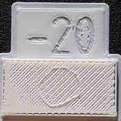
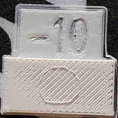
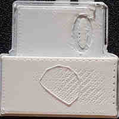
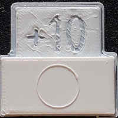
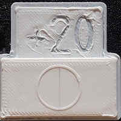
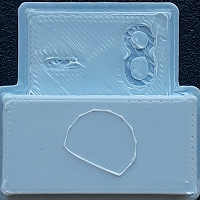
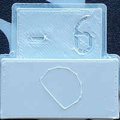
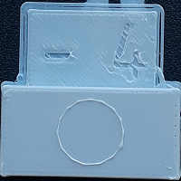
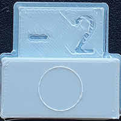
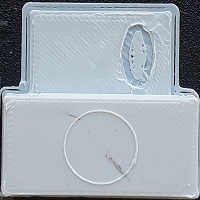

Filament Flow Calibration |
||
|
You need to do the bed level calibration before this one.
This test will print five test samples with various level of flow. You can choose the flow difference between each steps. You should start with the 10% one. After verifying the result with the help of the table below, you have to modify the filament extrusion multiplier in your filament preset (if the -20 is the best, change the multiplier from 1 to 0.8, see the formula below). Don't forget to save it afterwards! You can continue with the 2.5 step if you want a bit more precision.
|  |  |  |  |  |
| Not flat | Not flat | Not flat | Flat but the circle isn't that good |
Flat surface and good circle |
The flow you want to choose is the lowest that does not create gaps in the top surface. In this example it seems that the good flow is below +20. So you have to change your extrusion multiplier to 1.2 and print the second set of test (or put 1.15 and call it a day).
Don't look at the surface quality of the letter, it should be only good at the 0, as it's for this flow we calibrated the bed height. Here, going with +20% flow, you should lower the bed a bit (redoing the bed level calibration).
|  |  |  |  |  |
| Not good | Not good | Almost good | Good but the circle has some irregularities |
Good |
Here we can see the loop is not very good in the -8 and -6. The -4 is almost round but not quite, so it indicates that the nozzle has lost pressure. -2 is almost good but the 0 is the only one that can be considered as "good", and even so the loop isn't perfect.
You have to change the extrusion multiplier for the filament you calibrate for (and save it). Formula for the new extrusion multiplier: new_multiplier = ( (100 + chosen_number) / 100 ) * old_multiplier
Example: first step, i choose the -10, so i have ((100-10)/100) * 1 = (0.9) * 1 = 0.9
second step i choose +5, so i have ((100+5)/100) * 0.9 = (1.05) * 0.9 = 0.945
If you want to make this change permanent and left your extrusion multiplier to 1 in Slic3r, you can change your firmware configuration by multiplying (or dividing, depends of the firmware/setting) the 'extruder speed setting' (e-step, step_distance) by this extrusion multiplier.
Before doing this test, it's preferable to calibrate your extruder (it's easier on bowden setup):
Note that this value may change if you change the pressure the extruder exerts against the filament.
It's very difficult to tune the flow below the 2% mark, and no filament is consistent enough to warrant it anyway. Filaments that have a guarantee of +-0.03mm has a ~7% variation between the low and high end cross section.
Most of the calibrations need to be done in the right order. This one should be second.
You may want to re-do the bed level calibration if the result is below 0.9 or higher than 1.1.
Note that the filament extrusion multiplier can change with a different filament material, as a softer one can be squished/dented more by the extruder and so have a lower diameter in the extruder gears.
If your printer extruder 'eats' the filament and can't complete the top layer, you will have to increase the ironing distribution (by 5% increments). (Expert setting, print -> infill)
This test sets the setting "Complete individual objects" to true, so you may want to reset your print settings afterwards
Licence for models used for this calibration test: CC BY-SA 3.0